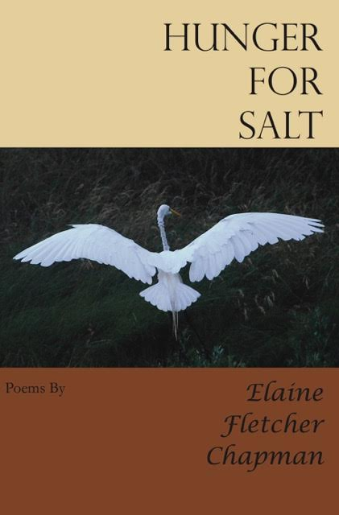

Hunger For Salt
A new book of poems by Elaine Fletcher Chapman
www.saintjulianpress.com
Hunger for Salt Trailer from Elaine Fletcher Chapman on Vimeo.



Hunger for Salt Trailer from Elaine Fletcher Chapman on Vimeo.